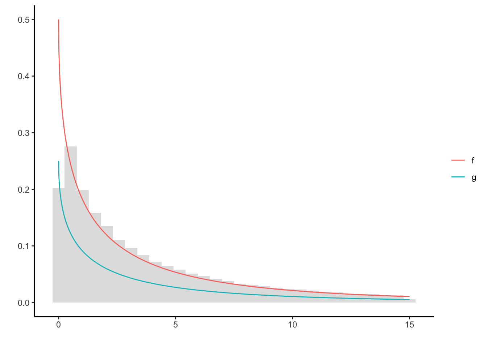
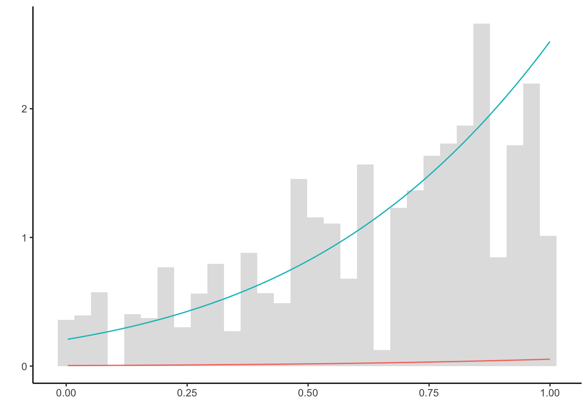
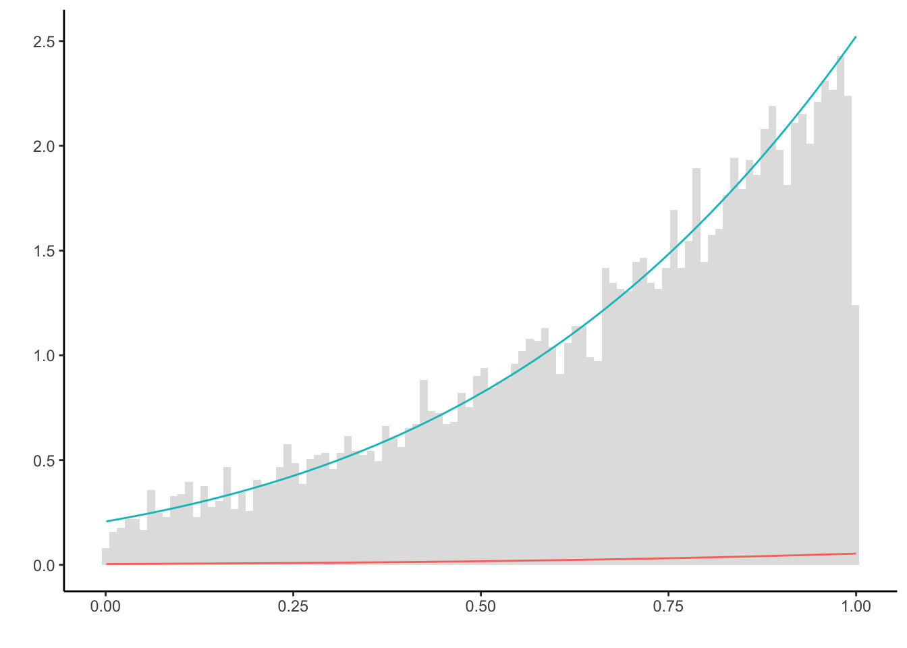
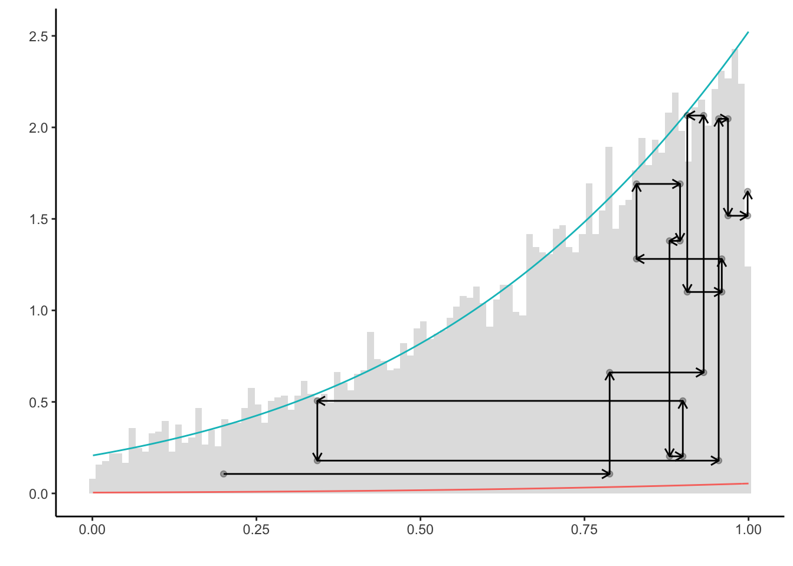
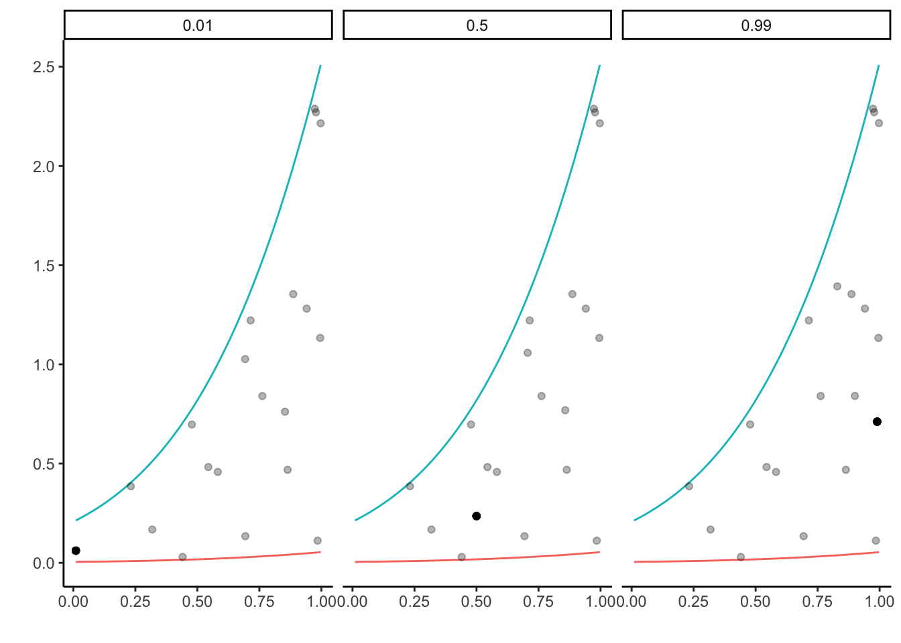
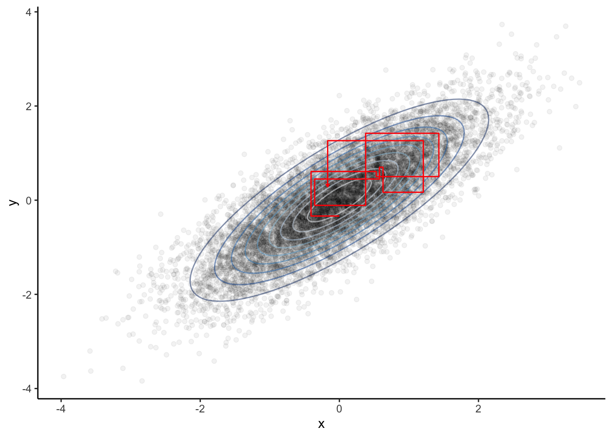

This document provides some code outlining the motivation for Gibbs sampling. It is intended to give a basic understanding on fundamental principles. The theoretical derivation, involved examples and applications can be found in Robert & Casella (2004): Monte Carlo Statistical Methods.
A slice sampler obtains a sample from a density (or a function proportional thereof) by evaluating a random walk in the area below the curve. The random walk is generated by successively drawing a uniformly distributed random variable from the slices parallel to the vertical and horizontal axes. This is visualized below. Specifically, consider the following case in which we sample from \(g(x) = e^{-\sqrt{x}}/4\). Note that only \(f = 2g\) is a proper density.
g <- function(x) exp(-sqrt(x)) / 4 #density up to constant 2
f <- function(x) 2 * g(x) #true densityIn order to run the slice sampler, the horizontal slice has to be obtained analytically. This requires inverting g, which yields \[\begin{equation*}
g^{-1}(y) = \ln(4y)^2.
\end{equation*}\] The algorithm is thus given by:
N <- 1e5 #length of random walk
X <- c(1) #starting value
for (n in 1:N) {
Y <- runif(1, 0, g(X[n])) #vertical slice
X[n + 1] <- runif(1) * log(4 * Y) ** 2 #horizontal slice
}
require("tidyverse")
df <- tibble(x = seq(0, 15, l = 1e3), g = g(x), f = f(x))
df <- gather(df, f, g, key = "col", value = "val")
ggplot() + theme_classic() + labs(y = '', x = '', color = '') +
geom_histogram(aes(X[X < 15], y = ..density..), alpha = 0.2) +
geom_line(data = df, aes(x, val, colour = col))
The sampler only relies on \(g\), yet produces a good approximation of \(f\). Notably, the left boundary is not as often explored by the chain as it should by theoretical density. Clearly, this is due to the slice sampler only advancing parallel to the axes. In cases like these, convergence usually takes longer.
Why would one employ the slice sampler, when samples of \(f\) can readily generated by a Metropolis-Hastings algorithm instead? One reason is that whilst the slice sample requires only the inversion of the target, a good implementation of a Metropolis-Hastings algorithm relies on a well-chosen proposal density. The search for such a proposal may be prohibitively expensive.
Consider the following example, where samples are to be generated from \[\begin{equation*} \mathcal{N}(3,1)\cdot\mathbb{I}_{(0,1)}. \end{equation*}\] A seemingly natural, but flawed proposal is given by using the density of \(\mathcal{N(3,1)}\). This gives the (independent) Metropolis-Hastings algorithm as follows:
f <- function(x) dnorm(x, 3, 1) * (0 <= x & x <= 1) #truncated normal
q <- function(x) dnorm(x, 3, 1) #proposal density
c = 1 / (pnorm(1,3,1) - pnorm(0,3,1)) #normalizing constant
g <- function(x) dnorm(x, 3, 1) * c #true density
rho <- function(x, y) f(y) / f(x) * q(x) / q(y) #acceptance probability
N <- 1e4 #length of chain
Y <- rnorm(N, 3, 1) #draw from proposal
X <- c(0.5) #initial value of Markov chain
for (n in 1:N) {
if (runif(1) < rho(X[n],Y[n])) X[n + 1] = Y[n] #accept with rho
else X[n + 1] <- X[n] #reject with 1-rho
}
ggplot() + theme_classic() + labs(y = '', x = '', color = '') +
geom_histogram(aes(X, y = ..density..), alpha = 0.2) +
stat_function(fun = function(x) f(x), color = "#f8766d") +
stat_function(fun = function(x) g(x), color = "#00bfc4") 
The true density (blue) is not approximately well enough. This is due to the proposals generated on the whole of \(\mathbb{R}\), but only accepted if they lie in \(\mathbb{I}_{(0,1)}\). Hence, only a small fraction, namely pnorm(1, 3, 1) - pnorm(0, 3, 1) = 0.0214 of all samples are not discarded. This is highly inefficient. To mitigate this problem, the proposal choice must be carefully revisited.
In scenarios like these, the slice sampler can offer a simple solution. First, we need to obtain the lower horizontal slice. Inverting, we obtain \[\begin{equation*} f^{-1}(y) = 3 \pm \sqrt{-2y\ln(\sqrt{2\pi})}, \end{equation*}\] and considering the monotonous increasing nature of the target density, the slice can be derived as \[\begin{equation*} \left\{ 3 - \sqrt{-2y\ln(\sqrt{2\pi})}, 1 \right\}. \end{equation*}\]
The slice sampler is thus readily implemented.
set.seed(123)
N <- 1e4 #length of chain
X <- c(0.2) #initial value of the chain
Y <- c() #vertical slice
for (n in 1:N) {
Y[n] <- runif(1) * f(X[n]) #vertical slice
X[n + 1] <- runif(1, max(3 - sqrt(-2 * log(sqrt(2 * pi) * Y[n])), 0), 1) #horiz. slice
}
plt = ggplot() + theme_classic() + labs(y = '', x = '', color = '') +
geom_histogram(aes(X, y = ..density..), alpha = 0.2, bins = 100) +
stat_function(fun = function(x) f(x), color = "#f8766d") +
stat_function(fun = function(x) g(x), color = "#00bfc4")
plt
Clearly, the slice sampler makes use of running the chain only on \(\mathbb{I}_{(0,1)}\), and is much more efficient than the Metropolis-Hasting algorithm above (note that both algorithms generate in total N = 1e4 samples both.
The nature of the slice sampler can be visualized by plotting its first couple of steps.
m <- 12 #number of steps
plt +
geom_point(aes(x = X[1:(m + 1)], y = c * Y[1:(m + 1)]), alpha = 0.3) +
geom_point(aes(x = X[2:(m + 1)], y = c * Y[1:m]), alpha = 0.3) +
geom_segment(aes(
x = X[1:m],
y = c * Y[1:m],
xend = X[2:(m + 1)],
yend = c * Y[1:m]
),
arrow = arrow(length = unit(0.2, "cm"))) +
geom_segment(aes(
x = X[2:(m + 1)],
y = c * Y[1:m],
xend = X[2:(m + 1)],
yend = c * Y[2:(m + 1)]
),
arrow = arrow(length = unit(0.2, "cm"))) 
This representations makes clear how the random walk will remain at places where the underlying density exhibits a lot of mass.
In the example above the initial value has been set by X <- 0.2. Remarkably, the slice sampler is very robust when it comes to the choice of initial values.
Below, let three random walks start at different values 0.01, 0.5 and 0.99.
set.seed(123)
N <- 20 #length of chain
X <- U <- matrix(NA, nrow = N, ncol = 3)
Vh <- runif(N) #use the same uniform random variables for the horizontal slice
Vv <- runif(N) #use the same uniform random variables for the vertical slice
X[1,] <- c(0.01, 0.5, 0.99) # initial values for horizontal slice
U[1,] <- Vh[1] * f(X[1,]) #first vertical slice
for (n in 2:N) {
shift <- pmax(3 - sqrt(-2 * log(sqrt(2 * pi) * U[n - 1, ])), 0)
X[n, ] <- Vv[n] * (1 - shift) + shift #horizontal slice
U[n, ] <- Vh[n] * f(X[n, ]) #vertical slice
}
#plot results
df = tibble(x = c(X), y = c(U), group = rep(X[1,], each = N))
ggplot(df) + theme_classic() + labs(y = '', x = '', color = '') +
stat_function(fun = function(x) f(x), color = "#f8766d") +
stat_function(fun = function(x) g(x), color = "#00bfc4") +
geom_point(aes(x = x, y = c * y), alpha = 0.3) +
geom_point(aes(x = group, y = c * Vh[1] * f(group)), colour = "black", alpha = 0.3) +
facet_wrap(~as.factor(group))
The solid black dot represents the first generated random variable. The plot highlights that although the initial values were quite different, the resulting samples are pretty similar.
Finally, we turn to the algorithm motivated by the slice sampler - the Gibbs Sampler. Instead of taking the axes as directions in which the random walk is exploring, conditional densities of the target density are considered instead.
In the example below, a sample is drawn from \[\begin{equation*} \mathcal{N}_2\left(0_2, \begin{pmatrix}1&\rho\\\rho&1\end{pmatrix}\right). \end{equation*}\] The full conditional for the second component, that is the distribution of the second component given the first, is obtained after some calculations \[\begin{equation*} Y_{n+1} | X_n = x_n \sim \mathcal{N}(\rho x_n, 1-\rho^2). \end{equation*}\] The converse holds true for the full conditional of the first component. This give the Gibbs Sampler as follows:
set.seed(123)
rho <- 0.8
N <- 1e4 #length of chain
X <- c(0); Y <- c() #initial values
for (n in 1:N) {
Y[n] = rnorm(1, rho * X[n], (1 - rho ** 2) ** .5)
X[n + 1] = rnorm(1, rho * Y[n], (1 - rho ** 2) ** .5)
}While it might not be easy to draw from the target density directly, drawing from two normals is made easy in .
The resulting Markov chains’ first couple of iterations (red) indicate their connection to the slice sampler: The sample of the two-dimensional density is generated by generating from each full conditional at a time.
# plot results
require('tidyverse')
require('ellipse')
require('RColorBrewer')
#true distribution
SIG = matrix(c(1, rho, rho, 1), 2, 2) #true covariance matrix
df.conf = as_tibble(do.call('rbind', mapply(
function(z) cbind(ellipse(SIG, level = z), z), seq(.1, .9, .1), SIMPLIFY = F
))) # ellipsoids of true distribution
#generated sample
df = tibble(x = X[1:n], y = Y)
df.path = tibble(x = c(df$x[1], rep(df$x[2:10], each = 2)),
y = c(rep(df$y[1:9], each = 2), df$y[10]))
ggplot(df, aes(x, y)) + theme_classic() +
guides(color = FALSE) + scale_color_brewer() +
geom_point(alpha = 0.05) +
geom_path(data = df.conf, aes(color = as.factor(z)), alpha = 0.5) +
#geom_point(data = df[1:10, ], color = 'red') +
geom_path(data = df.path, color = 'red', arrow = arrow(length = unit(0.1, "cm"))) 